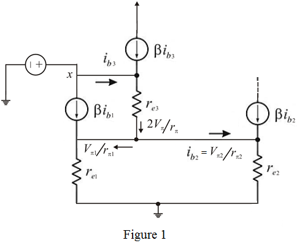
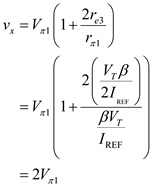
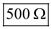
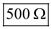

Step 1:
Refer to Figure 7.33 in the textbook for the current mirror circuit.
The modified circuit of base current compensated mirror circuit is shown in Figure 1.

Step 2:
The transistors are biased at reference current, .
The resistances of the transistors are equal and are expressed as.
The trans-conductance  is,
is,
The resistance, of the transistor component is, .
The transistor is biased at  .
.
Hence the resistance, for the transistor component,  is . Therefore, the expression for is,
is . Therefore, the expression for is,

Step 3:
The current in the emitter of is  .
.
The expression for voltage is,
Substitute for and for  in the expression.
in the expression.
The expression for the test voltage,  (voltage at the node x as denoted in the diagram) is,
(voltage at the node x as denoted in the diagram) is,
Substitute for in the expression to obtain the expression for .
Step 4:
Substitute for and for in the expression in order to yield the expression for the test voltage,  .
.

Step 5:
Write the expression for the current,
The expression for the input resistance is,
Substitute in the expression for the input resistance.
Step 6:
Substitute for  in the expression for the input resistance.
in the expression for the input resistance.
Hence, the expression for the input resistance,  is, .
is, .
Step 7:
Substitute to yield the value of  .
.
Therefore, the value of  when the reference current assumes
when the reference current assumes  is, .
is, .